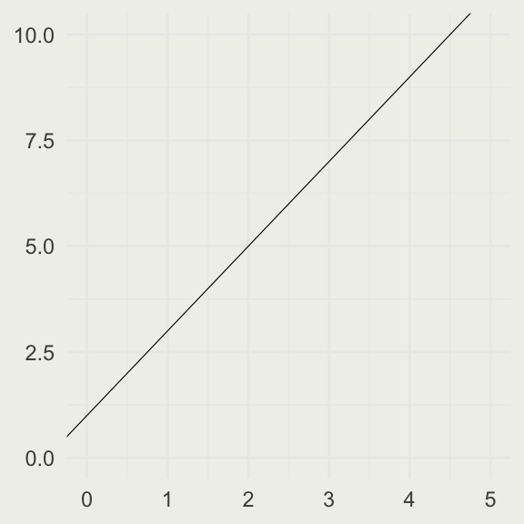
SMaC: Statistics, Math, and Computing
APSTA-GE 2006: Applied Statistics for Social Science Research
Eric.Novik@nyu.edu | Summer 2026 | Session 2
Session 2 Outline
Linear, exponential, and logarithmic functions
Limits
Definition of the derivative
Rules of differentiation
The chain rule and product rule
Live experiments and data collection!
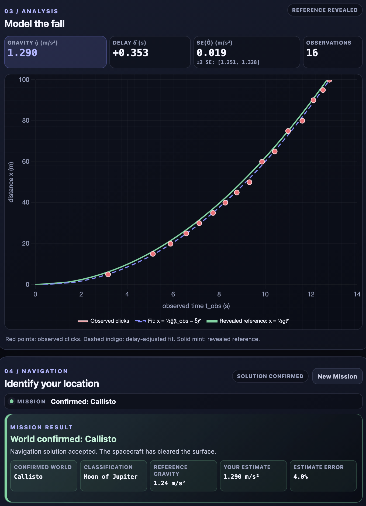
Image source: Wikipedia
Lines
- We typically use the slope-intercept form of the line: \(y = a + bx\), where \(a = y(0)\) is the intercept and \(b = \Delta y / \Delta x\) is the slope (rise over run).
- For example: \(y = 1.5 + 0.5x\).
- If \(b = 0\), the line is horizontal.
A graph of a line with the equation \(y = 1 + 2x\).
A graph of a line with the equation \(y = 7.5 - 2x\).
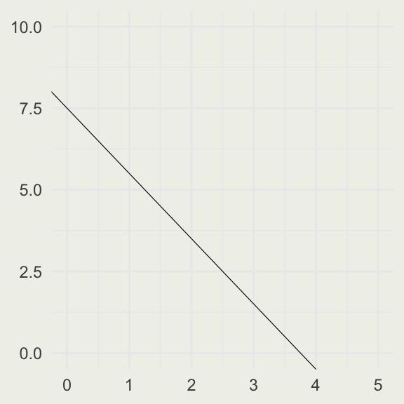
Your Turn
- Turn the following code into a function called
plot_line(slope, intercept) - Test it for different values of
slopeandintercept
Choose test values whose lines are visible in the fixed plotting window.
Exponential Functions
- The idea of an exponential function is that the rate of change of the function at time \(t\) is proportional to the value of the function at time \(t\). In other words:
\[ \frac{\text{d}[y(t)]}{\text{d}t} = k \cdot y(t) \]
The general solution to this differential equation is \(y(t) = C e^{kt}\), where \(C = y(0)\).
Think of population growth or growth of an interest-bearing asset.
Example: Compound Interest
An asset that has a value \(A\) is invested with an annual interest rate \(r\). What is the balance in the account, \(P_1\), at the end of the first year?
\[ P_1 = A + rA = A(1 + r) \]
After year two, the value is:
\[ P_2 = P_1 + rP_1 = P_1(1 + r) = \\ A(1 + r)(1 + r) = A(1 + r)^2 \]
And after year \(t\), the value is:
\[ P(t) = A(1 + r)^t \]
What if we compound the interest twice per year? In that case:
\[ P_1 = A \left (1 + \frac{r}{2} \right)^2 \]
If we compound \(n\) times per year, the balance after one year would be:
\[ P_n(1) = A \left (1 + \frac{r}{n} \right)^n \]
Combining these ideas, if we compound \(n\) times per year, for \(t\) years, we get:
\[ P_n(t) = A \left (1 + \frac{r}{n} \right)^{nt} \]
Letting \(n \to \infty\) gives continuous compounding. Both the finite- and continuous-compounding formulas are exponential functions of time.
Example: Compound Interest
rate <- 0.05 # interest rate r
P <- 100 # principal P
n_comp <- 1:100 # number of compoundings n
Pn <- function(n, A, r, t) A * (1 + r/n)^(t*n)
Pe <- function(A, r, t) A * exp(r * t)
pn <- Pn(n = n_comp, A = P, r = rate, t = 50)
pe <- Pe(A = P, r = rate, t = 50)
d <- data.frame(n_comp, pn)
p <- ggplot(d, aes(n_comp, pn))
p + geom_line(linewidth = 0.2) +
geom_hline(yintercept = pe, color = 'red', linewidth = 0.2) +
xlab("Number of times the interest is compounded") +
ylab("Value of an asset") +
ggtitle("Value of $100 at r = 0.05 after 50 years")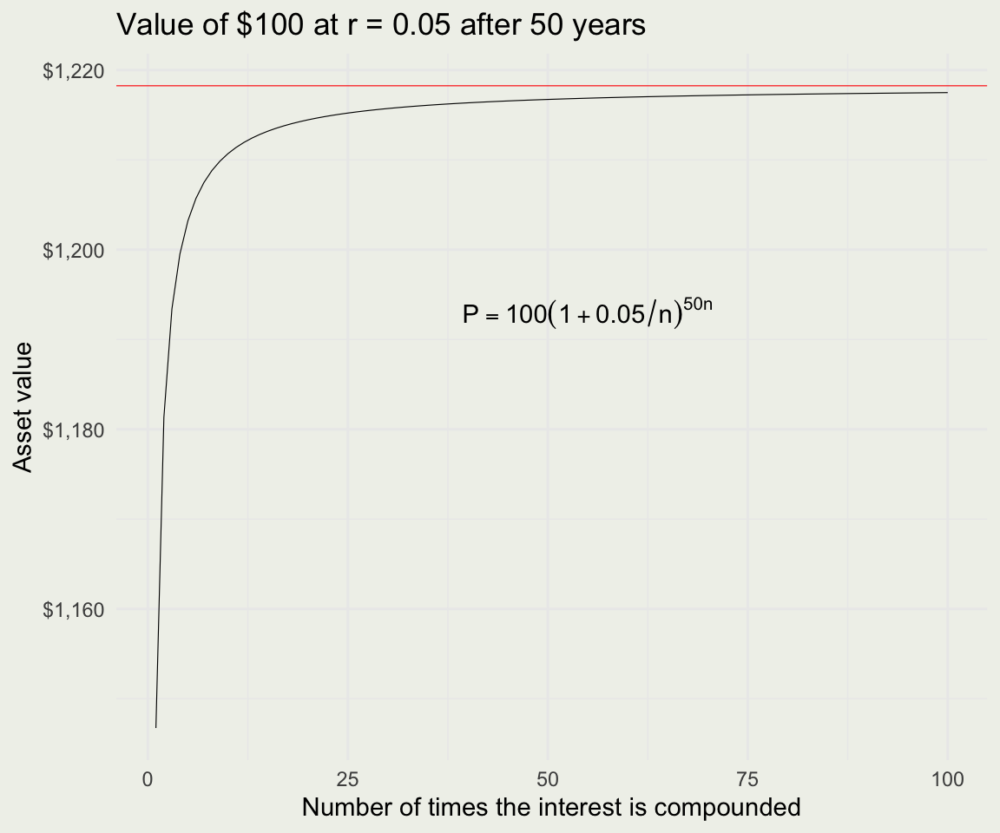
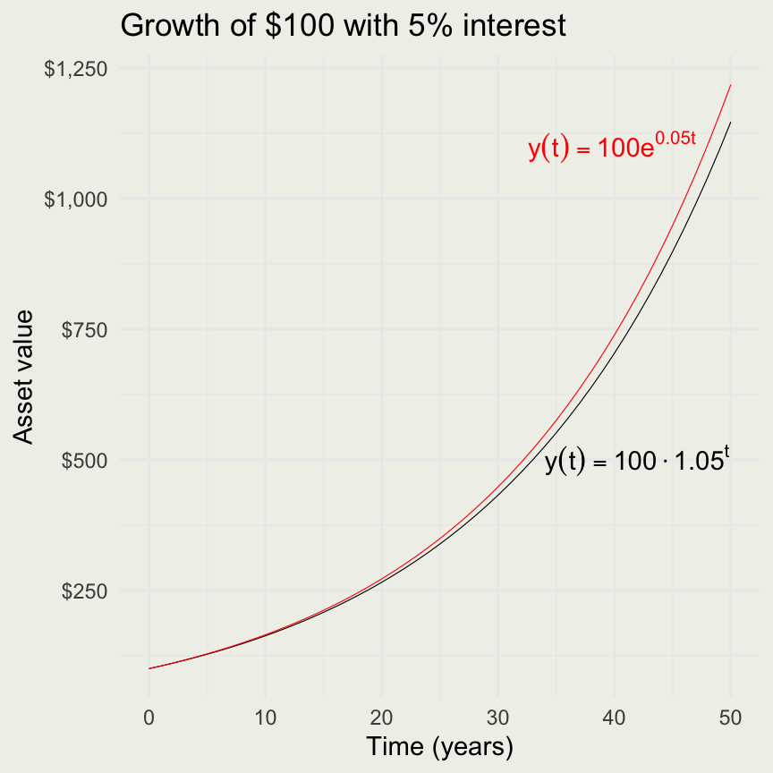
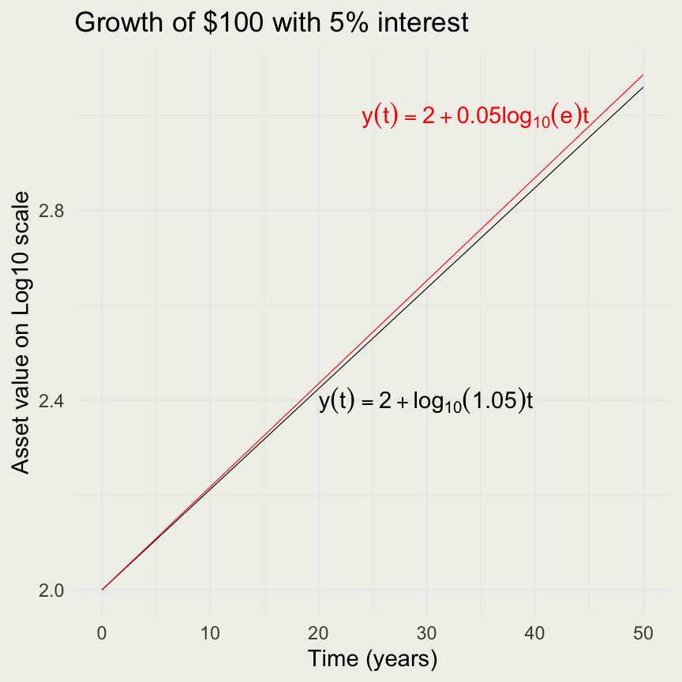
Your Turn
Suppose a particular population of bacteria is known to double in size every 4 hours. If a culture starts with 1000 bacteria, what is the population after 10 hours and 24 hours?
The Number \(e\)
- Recall the equation for asset value after \(t\) years compounded \(n\) times:
\[ P_n(t) = A \left (1 + \frac{r}{n} \right)^{nt} \]
- Let \(m = n/r\) and take the limit as \(m \to \infty\).
\[ P_\infty(t) = A \lim_{m \to \infty} \left ( 1 + \frac{1}{m} \right)^{m(rt)} \]
The Number \(e\)
- We can compute the value of \(\left ( 1 + \frac{1}{m} \right)^m\) as m increases.
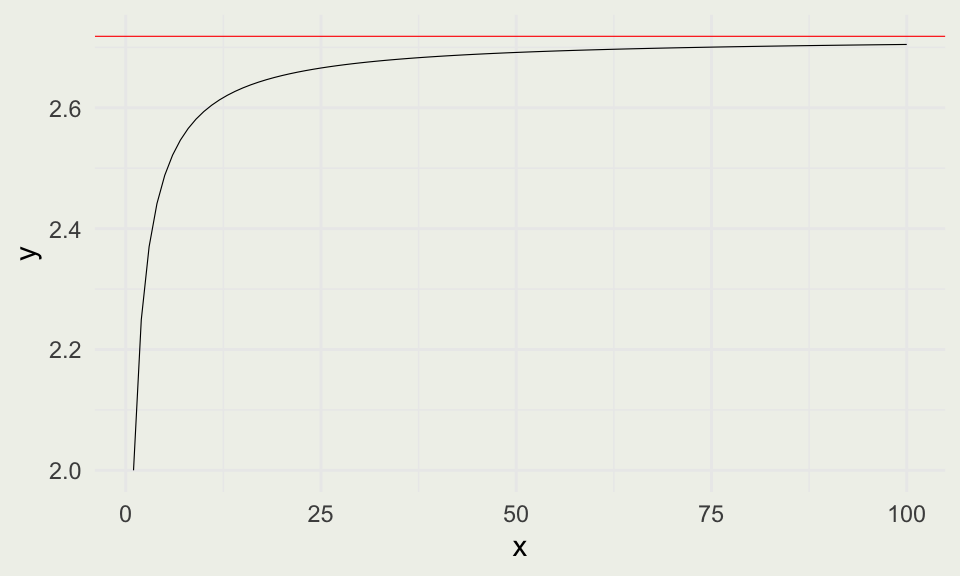
- The number that this limit approaches is called \(e\).
\[ \begin{aligned} P_\infty(t) &= A \lim_{m \to \infty} \left ( 1 + \frac{1}{m} \right)^{m(rt)} \\ &= A e^{rt} \end{aligned} \]
Properties of Exponents
Your Turn
Suppose $750 is invested in an account at an annual interest rate of 5.5%, compounded continuously. Let \(t\) denote the number of years after the initial investment and \(A(t)\) denote the amount of money in the account at time \(t\). Find a formula for \(A(t)\). Find the amount of money in the account after 5 years, 10 years, and 50 years.
Logarithmic functions
For \(a > 0\) and \(a \ne 1\), an exponential function of the form \(f(x) = a^x\) is one-to-one, so it has an inverse called a logarithmic function. Logarithm arguments must be positive.
The following relationship always holds for \(a > 0\): \(a^t = e^{\log(a)t}\) since \(e^{\log(a)} = a\)
\(\log_a(uv) = \log_a(u) + \log_a(v)\)
\(\log_a(u/v) = \log_a(u) - \log_a(v)\)
\(\log_a u^n = n \log_a u\)
In R and throughout this course, \(\log\) means the natural log, base \(e\). The natural log and the exponential function undo one another:
\[ \log(e^x) = x, \qquad e^{\log(y)} = y \quad (y > 0). \]
For \(x\) close to zero, the curve \(e^x\) is close to its tangent line at zero:
\[ e^x \approx 1 + x \qquad \text{for small } x. \]
For example, \(e^{0.05} = 1.0513 \approx 1.05\).
Apply \(\log\) to the approximation \(e^x \approx 1+x\):
\[ x = \log(e^x) \approx \log(1+x). \]
Thus, for small \(x\), \(\log(1+x) \approx x\).
Now suppose a regression for a positive outcome has the fitted relationship
\[ \log \widehat{y}(x) = \alpha + 0.05x. \]
Holding the other regressors fixed, increasing \(x\) by one increases the fitted log outcome by \(0.05\).
Transforming that change back to the original outcome scale:
\[ \begin{aligned} \log \widehat{y}(x+1) - \log \widehat{y}(x) &= 0.05, \\ \log\!\left(\frac{\widehat{y}(x+1)}{\widehat{y}(x)}\right) &= 0.05, \\ \frac{\widehat{y}(x+1)}{\widehat{y}(x)} &= e^{0.05} \approx 1.05. \end{aligned} \]
So a coefficient of \(0.05\) approximately multiplies \(y\) by \(1.05\), corresponding to a 5% increase. The exact increase is \(100(e^{0.05}-1)\% \approx 5.13\%\).
In statistics and machine learning, we often want to normalize a vector so its components add to one. The softmax function is
\[ \operatorname{softmax}(x)_i = \frac{\exp(x_i)}{\sum_{j=1}^N \exp(x_j)}. \]
If \(x\) has length 3, the numerator is a length-3 vector, the denominator is a scalar, and the resulting length-3 vector adds to 1.
[1] 0.09003057 0.24472847 0.66524096[1] Inf Inf Inf[1] NaN NaN NaNThe large inputs overflow: their exponentials are too large for the computer to represent directly.
We can instead work on the log scale:
\[ \log \operatorname{softmax}(x)_i = x_i - \log \sum_{j=1}^N \exp(x_j). \]
The second term is the log-sum-exp, or LSE. To evaluate it stably, subtract the largest input before exponentiating.
\[ \begin{aligned} m &= \max_j x_j, \\ \operatorname{LSE}(x) &= \log \sum_{j=1}^N \exp(x_j) \\ &= m + \log \sum_{j=1}^N \exp(x_j - m). \end{aligned} \]
Because \(m = \max_j x_j\), the largest shifted exponent is zero and every other shifted exponent is negative.
Your Turn: write LSE(x) and log_softmax(x), test them on small and large inputs, exponentiate the log probabilities, and check that they add to 1.
Limits
A limit is the value a function approaches as its input gets arbitrarily close to a specified point. The limit can exist even when the function is undefined there or has a different value there.

This demo shows what happens to the secant line as it approaches the tangent.
Source: Calculus Volume 1
A Cruel Joke
A thousand years from now, your friends drug you, load you onto a ship, and fire it toward an unknown moon. You wake in a spacesuit beside the ship, looking at a 100 m tower. A metal ball is mounted at the top, you can release it remotely, and you have a stopwatch.
The ship’s computer refuses to launch until you identify the moon and enter its gravitational acceleration \(g\)
Enter the correct answer and the autopilot takes you home. Enter the wrong answer and the ship follows the wrong trajectory — and crashes
You remain on the ground, where you can see the full tower, and remotely release the ball from the top
A sensor flashes a light each time the falling ball crosses a 5 m mark, giving you 20 known distances down the tower
You use the stopwatch to record the time of every flash, producing pairs \((t_k, x_k)\)
From those observations, you must estimate \(g\), match it to the correct moon, and enter your answer
Setting Up the Equation of Motion
Let \(x(t)\) measure downward distance from the release point, with \(x(0)=0\). The ball is released from rest at \(t=0\)
Ignoring the atmosphere and treating \(g\) as constant near the moon’s surface, free fall is modeled by
\[ x(t) = \tfrac{1}{2}\,g\,t^2 \]
For now, take this equation as given. We will derive it after we learn integration
In the game, \(g\) is unknown. Each flash gives a known distance \(x_k\) and a measured time \(t_k\); later we will use those observations to estimate \(g\)
The Drop
For this worked example, we are not estimating \(g\) yet. We use the accepted gravity on Earth’s Moon, \(g_{\text{Moon}} = 1.625\ \text{m/s}^2\). At that value, a 100 m drop takes about 11 s, slow enough to time the flashes with a stopwatch; on Earth it would take only 4.5 s.
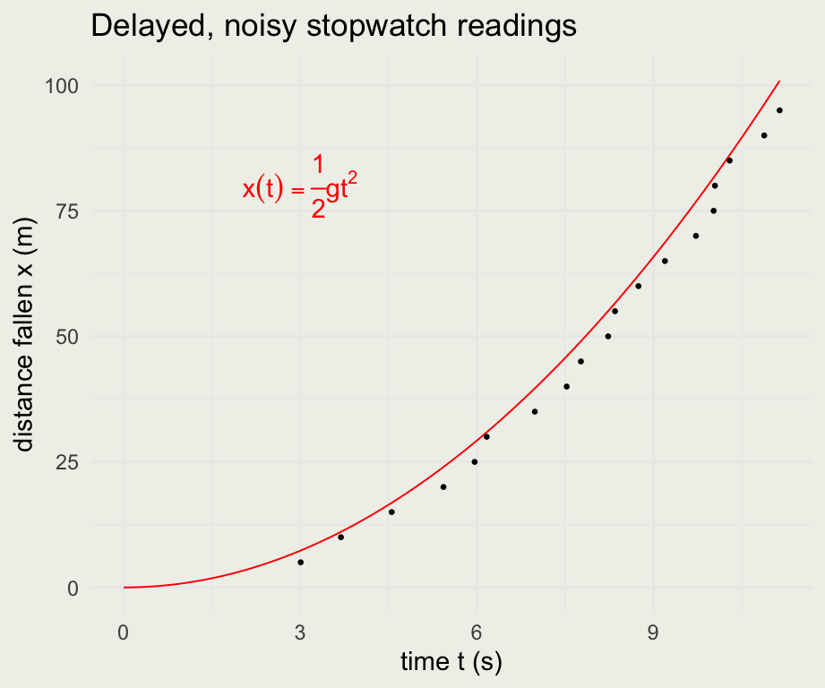
- The red curve uses the accepted value of \(g\); it is not estimated from these observations. Later, we will reverse the problem and recover an unknown \(g\) from data like these.
- Oxygen is limited, so each drop costs you. One drop gives up to 20 timed marks (this run caught 19) — how many marks, and how many drops, do we need to pin down \(g\) to one decimal place? To two? We return to this in Session 7.
Average Velocity and the Secant
Before we can find \(g\), we need to understand velocity. What was the ball’s average velocity between \(t_1\) and \(t_2\) seconds? This is the slope of the secant line:
\[ \bar{v} = \frac{\Delta x}{\Delta t} = \frac{x(t_2) - x(t_1)}{t_2 - t_1} = \frac{\tfrac{1}{2} g\, t_2^2 - \tfrac{1}{2} g\, t_1^2}{t_2 - t_1} = \tfrac{1}{2} g\, (t_1 + t_2) \]
t1 <- 4; t2 <- 9
x1 <- 0.5 * g_ref * t1^2
x2 <- 0.5 * g_ref * t2^2
# avg velocity = ½ g (t1 + t2)
slope <- (x2 - x1) / (t2 - t1)
ggplot(sol, aes(t, x)) +
geom_line(linewidth = 0.2) +
geom_abline(slope = slope,
intercept = x1 - slope * t1,
color = 'red', linewidth = 0.2) +
geom_point(aes(x = t1, y = x1), color = 'blue') +
geom_point(aes(x = t2, y = x2), color = 'blue') +
xlab("time t (s)") +
ylab("distance fallen x (m)") +
ggtitle("Position curve and a secant line")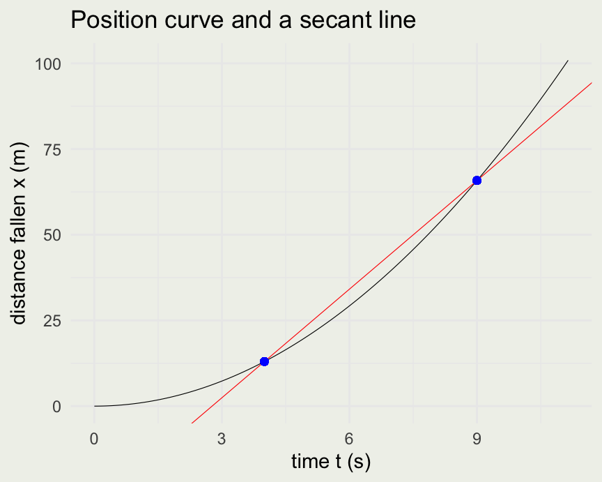
What if we wanted the speedometer reading at an instant \(t\), not the average over an interval? This is where the limit comes in.
\[ v = \lim_{\Delta t \to 0} \frac{\Delta x}{\Delta t} = \frac{dx}{dt} \]
The Derivative
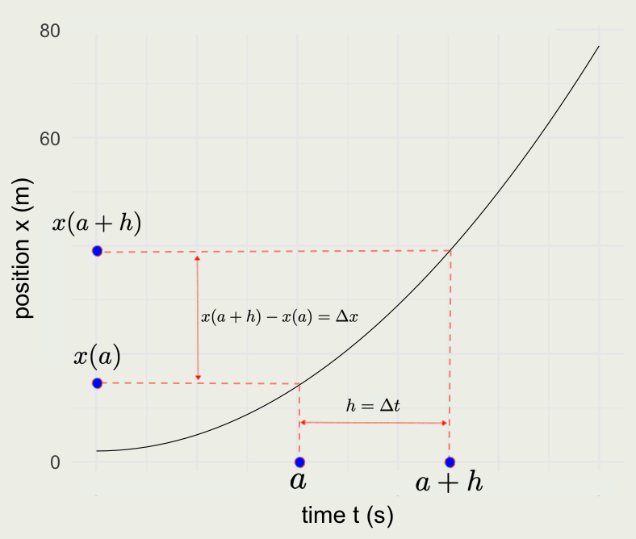
How do we compute this limit, which we wrote as \(dx/dt\)?
Re-write the secant, or average-velocity, equation:
\[ \begin{aligned} \bar v &= \frac{x(a+h)-x(a)}{a+h-a} \\ &= \frac{x(a+h)-x(a)}{h}, \\[0.6em] v &= \lim_{h \to 0}\frac{x(a+h)-x(a)}{h}. \end{aligned} \]
The Derivative
- Our problem is to find the velocity at time \(t\) given the position function \(x(t) = \tfrac{1}{2} g t^2\).
\[ \begin{eqnarray} v & = & \lim_{h \to 0} \frac{x(t + h) - x(t)}{h} = \lim_{h \to 0} \frac{\tfrac{1}{2} g (t + h)^2 - \tfrac{1}{2} g t^2}{h} = \\ & \lim_{h \to 0} & \frac{g t h + \tfrac{1}{2} g h^2}{h} = \lim_{h \to 0} \left(g t + \tfrac{1}{2} g h\right) = g t \end{eqnarray} \]
Using the accepted value \(g \approx 1.62\ \text{m/s}^2\), the speedometer at \(t = 4\) reads \(1.62 \cdot 4 \approx 6.5\ \text{m/s}\) downward.
The velocity is the derivative of position with respect to time, and we can write:
\[ v(t) = \frac{dx}{dt} = g t \]
The Derivative
- Acceleration is a change in velocity with respect to time or the second derivative of position:
\[ a(t) = \frac{dv}{dt} = \frac{d}{dt} \left( \frac{d x}{d t} \right) = \frac{d^2 x}{d t^2} \]
- We take the limit again, this time of the velocity function \(v(t) = g t\):
\[ a = \frac{dv}{dt} = \lim_{h \to 0} \frac{g(t + h) - g t}{h} = \lim_{h \to 0} \frac{g h}{h} = \lim_{h \to 0} g = g \]
- The acceleration \(a(t) = g\) does not depend on \(t\) — it is constant. This constant is exactly what the mission needs. Recovering it from the drop data is the inference problem we solve in Sessions 6 and 7.
- It would be cumbersome to compute derivatives this way. Fortunately, we have shortcuts.
Rules of Differentiation
\[ \begin{eqnarray} \frac{d}{dx}(c) & = & 0 \\ \frac{d}{dx}(x) & = & 1 \\ \frac{d}{dx}(x^n) & = & n x^{n-1} \\ \frac{d}{dx}[c f(x)] & = & c \frac{d}{dx}[f(x)] \\ \frac{d}{dx}[f(x) + g(x)] & = & \frac{d}{dx}f(x) + \frac{d}{dx}g(x) \\ \frac{d}{dx}(e^x) & = & e^x \\ \frac{d}{dx}\log(x) & = & \frac{1}{x} \end{eqnarray} \]
Your Turn
- Suppose that on a different moon a calibration drop (with a small initial push, so it is not released from rest) produced the position function:
\[ x(t) = 4 + 3t + 5t^2 \]
What is the ball’s position at time zero and time 1 second?
What is the velocity at time zero?
What is the velocity and acceleration at 5 seconds?
What is this moon’s gravitational acceleration \(g\)?
Product Rule and Chain Rule
- Product and chain rules help us differentiate products and compositions of functions, respectively.
- Intuition for them can be found in the Essence of Calculus video.
- We will state them here without derivation.
\[ \frac{d}{dx}[f(x) g(x)] = f(x) \frac{d}{dx}[g(x)] + g(x)\frac{d}{dx}[f(x)] \]
- If \(F = f \circ g\), in that \(F(x)= f(g(x))\):
\[ F'(x) = f'(g(x))g'(x) \]
Example of a Product Rule
- Suppose we wanted to compute the derivative of \(x(t) = \sin(t) \cos(t)\)
\[ \begin{eqnarray} \frac{d}{dt}(\sin(t) \cos(t)) & = & \\ \sin(t)\frac{d}{dt}[\cos(t)] + \cos(t)\frac{d}{dt}[\sin(t)] & = & \\ \sin(t) (-\sin(t)) + \cos(t)\cos(t) & = & \\ \cos^2(t) - \sin^2(t) \end{eqnarray} \]
Approximating Derivatives
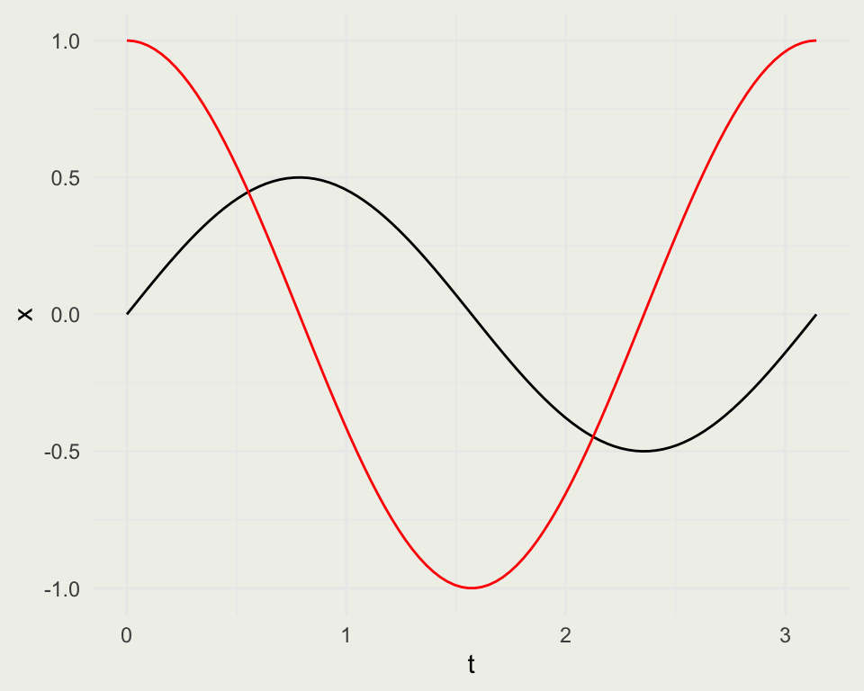
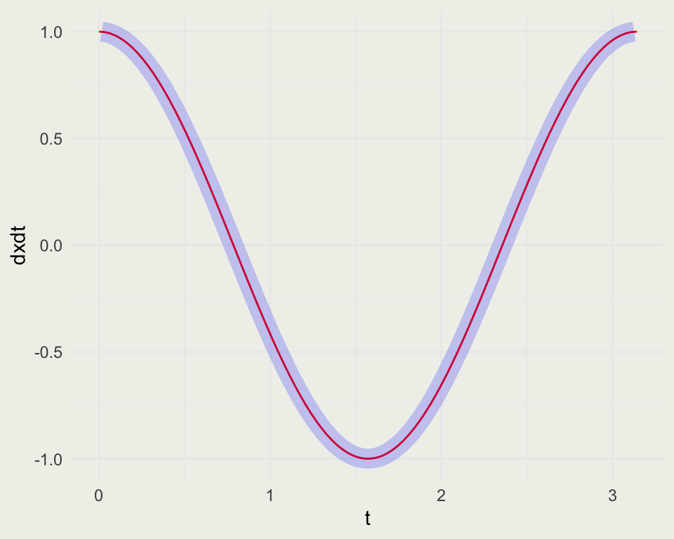
Examples of the Chain Rule
What is the derivative of \(\sin(x^2)\)? It is \(2x \cos(x^2)\)
Your turn: \[ \frac{d}{dx} \left( e^{x^2 \cos(x)} \right ) = \]
\[ e^{x^2 \cos(x)} \left(2x \cos(x) - x^2 \sin(x)\right) \]
Homework
- A particle moves counter-clockwise in uniform circular motion, with \(R > 0\) and \(\omega > 0\):
\[ x(t) = R \cos(\omega t) \\ y(t) = R \sin(\omega t) \]
- Here \(R\) is the radius, \(\omega\) is the angular frequency in radians per unit time, and the period is \(T = 2\pi / \omega\).
- Create position functions that take \(R\), \(t\), and \(\omega\) as arguments.
- Create a length-100 vector \(t\) covering one full rotation.
- Plot \(x(t)\) and \(y(t)\) against \(t\) on the same graph, then plot \(y\) against \(x\). Explain the geometry.
- Create four more functions: velocity and acceleration in the \(x\) and \(y\) directions.
- Plot each velocity component with its corresponding position component, and each acceleration component with its corresponding position component.
- Verify that \(\mathbf{a}(t) = -\omega^2 \mathbf{r}(t)\). Explain what the position, velocity, and acceleration vectors show.